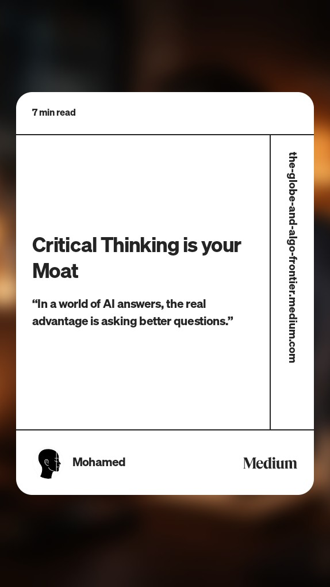
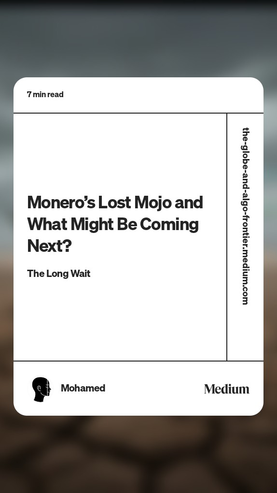

Brands I Spent Time With
 Kroger
Kroger Primark
Primark NHS Scotland
NHS Scotland Keppel
Keppel Home Depot
Home Depot EY
EY Deloitte
Deloitte WiproKrogerPrimarkNHS ScotlandKeppelHome DepotEYDeloitteWipro
WiproKrogerPrimarkNHS ScotlandKeppelHome DepotEYDeloitteWiproCertified Senior AI Data Engineer with 7+ years shipping production platforms across Data Engineering, Agentic AI, Knowledge Graphs, and Cybersecurity. Currently at EY, architecting systems that turn raw threat intelligence into autonomous cyber defense.
KrogerPrimarkNHS ScotlandKeppelHome DepotEYDeloitteWiproKrogerPrimarkNHS ScotlandKeppelHome DepotEYDeloitteWipro"Critical thinking is your moat. In a world of AI answers, the real advantage is asking better questions."
 Azure OpenAI
Azure OpenAI
 LangChain
🔗 LangGraph
LangChain
🔗 LangGraph
 AutoGen
🔌 MCP (Model Context Protocol)
🧩 Semantic Kernel
AutoGen
🔌 MCP (Model Context Protocol)
🧩 Semantic Kernel
 Databricks GenAI
Databricks GenAI
 Pinecone
Pinecone
 Elasticsearch (Vector)
🔄 RAG Pipelines
Elasticsearch (Vector)
🔄 RAG Pipelines
 MLflow
MLflow
 KubeFlow
Databricks
KubeFlow
Databricks
 Apache Spark
△ Delta Lake + DLT
Apache Spark
△ Delta Lake + DLT
 Apache Airflow
Apache Airflow
 dbt
dbt
 Microsoft Fabric
Azure Data Factory
Microsoft Fabric
Azure Data Factory
 BigQuery
BigQuery
 Kafka
Kafka
 Redis
Redis
 Informatica
Informatica
 Power BI
Microsoft Azure
GCP
Power BI
Microsoft Azure
GCP
 AWS
AWS
 Kubernetes
Kubernetes
 Docker
Docker
 Helm
Helm
 Terraform
Terraform
 GitHub Actions
GitHub Actions
 Azure DevOps
Azure DevOps
 JFrog
JFrog
 Neo4j
Neo4j
 PostgreSQL
PostgreSQL
 Azure SQL
Cosmos DB
Elasticsearch
Azure SQL
Cosmos DB
Elasticsearch
 Oracle SQL
Cloud Spanner
Oracle SQL
Cloud Spanner
 Wiz
🔰 MS Defender
🔍 Qualys
✅ CheckMarx
🌐 Invicti
📦 Mend
Wiz
🔰 MS Defender
🔍 Qualys
✅ CheckMarx
🌐 Invicti
📦 Mend
 SonarQube
🏛️ Azure Purview
📋 Unity Catalog
✓ Great Expectations
SonarQube
🏛️ Azure Purview
📋 Unity Catalog
✓ Great Expectations


A unified cyber defense platform ingesting hundreds of threat feeds into Neo4j, powered by a Multi-Agent AutoGen swarm and exposed as an MCP server for AI-driven threat intelligence.
Azure Databricks · Delta Lake · Neo4j · LangChain · AutoGen · MCP · Kubernetes · ELK
Multi-tenant cyber operations platform integrating relational + graph data models, containerized Airflow, attack path analysis, Vertex AI MLOps, and full DevSecOps CI/CD.
PySpark · Airflow · Neo4j · BigQuery · Vertex AI · Terraform · GitHub Actions
Azure Data Lake medallion architecture with ADF, Databricks, Informatica ETL migration, Power BI dashboards, and full CI/CD with governance embedded at every layer.
Azure Data Factory · Databricks · Azure Purview · Informatica · Power BI
Batch and real-time ML inference pipelines on Azure Databricks + AKS, MLOps lifecycle mentorship for UK healthcare practitioners, and cross-European stakeholder delivery.
Azure Databricks · Azure ML · AKS · Azure DevOps · Tableau · Denodo



"I started as an engineer. I stayed because the hardest problems live in the data layer, and the most consequential ones live at the intersection of data and security."
With 7+ years across EY, Deloitte, and Wipro, I've built data platforms for banking, airlines, energy, public healthcare, and enterprise cybersecurity. From raw ingestion layers to LLM-powered knowledge graphs, I work across the full stack: Delta Lake, Airflow, Neo4j, multi-agent AI systems, Vertex AI MLOps, and the DevSecOps layer that wraps all of it.
Certified across Microsoft Fabric, Databricks (Data Engineering + GenAI), and Neo4j. Based in Chennai. Currently at EY. Always solving problems where the stakes are real.
✦Production-first. Governance-always.
✦Multi-cloud. Multi-agent. Multi-domain.
 View Credly Portfolio ↗
View Credly Portfolio ↗